欧游札记之哈布斯堡荣光(Day4布拉格—犹太区—高堡区—CK小镇)
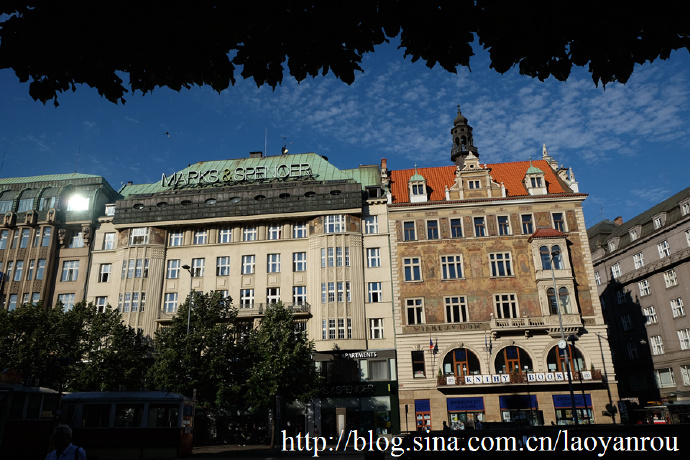
Day4 布拉格—犹太区—高堡区—CK小镇
布拉格之旅的最后一日我们几经思量放弃了新城区而最终挑出了犹太区和高堡区这两个颇具历史意义的地方。因为犹太人是布拉格1000多年历史长河绩不可磨灭的一个民族，不单是在传统商业经济方面做出杰出贡献，而且在精神文化方面也诞生了包括伟大的存在主义先驱卡夫卡在内的一大批优秀文化艺术工作者。犹太人虽然曾经遭受了自神圣罗马帝国时代到奥匈帝国到德意志时代以来各代信奉天主教的统治者们爱恨交加的利用、嫉妒、鄙视和种族隔离及屠杀，仍顽强地在布拉格一隅地将自己的文化和传统火种保留了下来。因此当我们从风光旖旎的伏尔塔瓦河边来到拥挤狭窄的旧犹太区时，眼前瞬间的反差仿佛将我们喉咙掐住一般喘不上气来，一股莫名的悲怆油然而生。 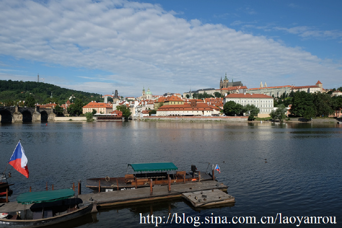 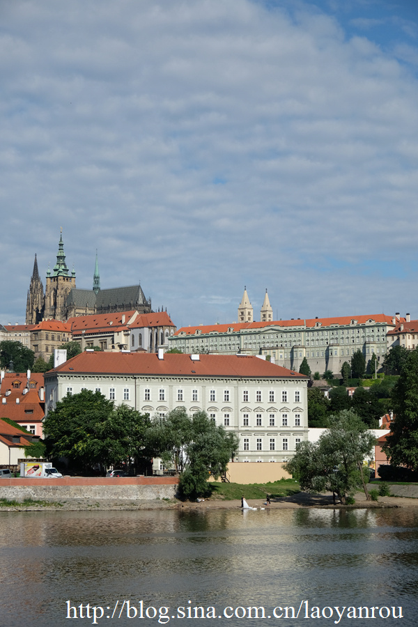 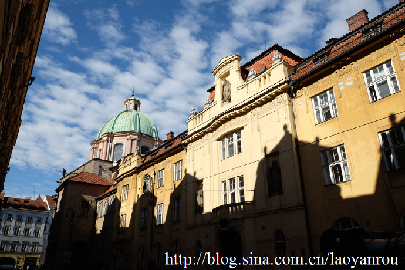
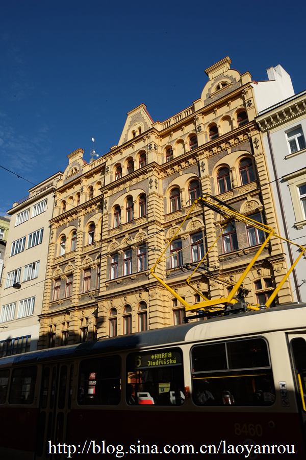
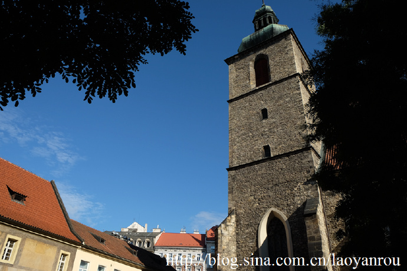
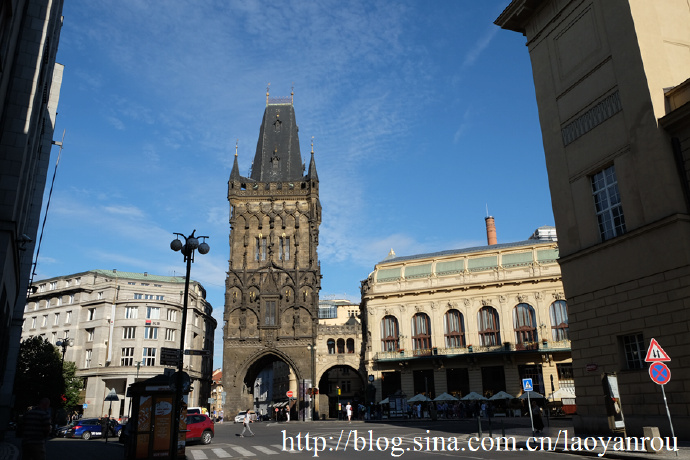
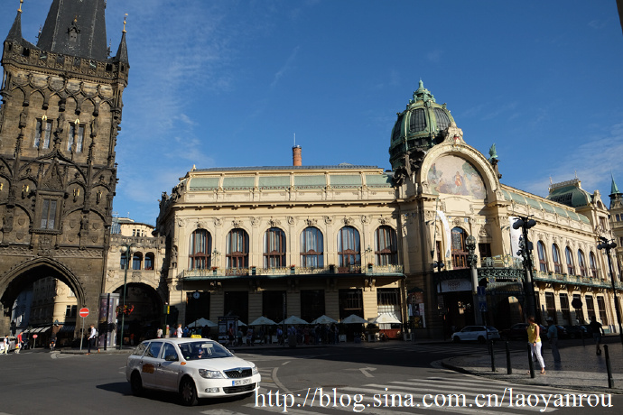
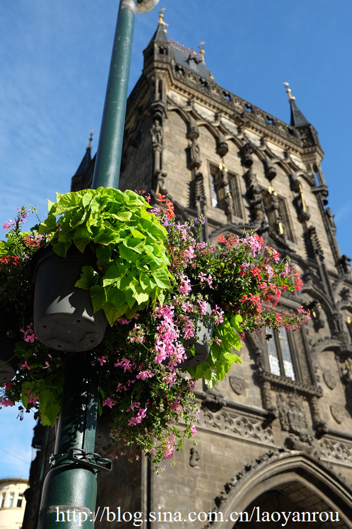
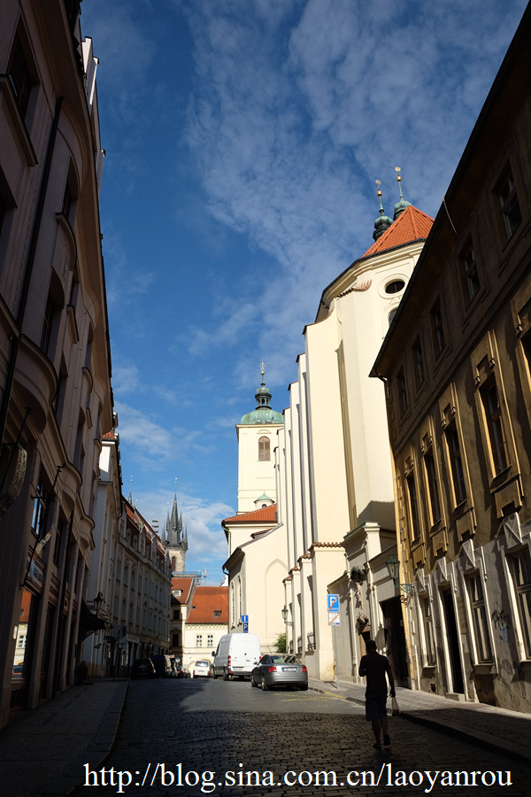
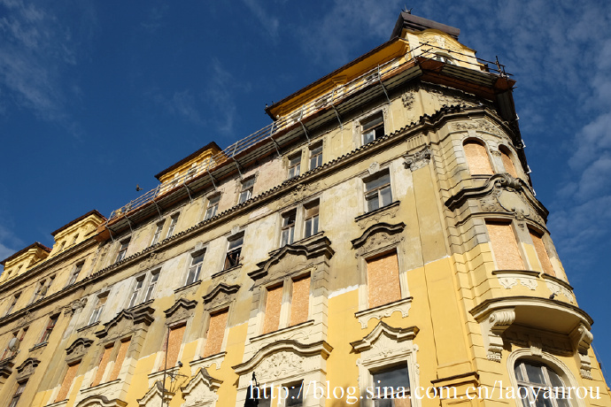
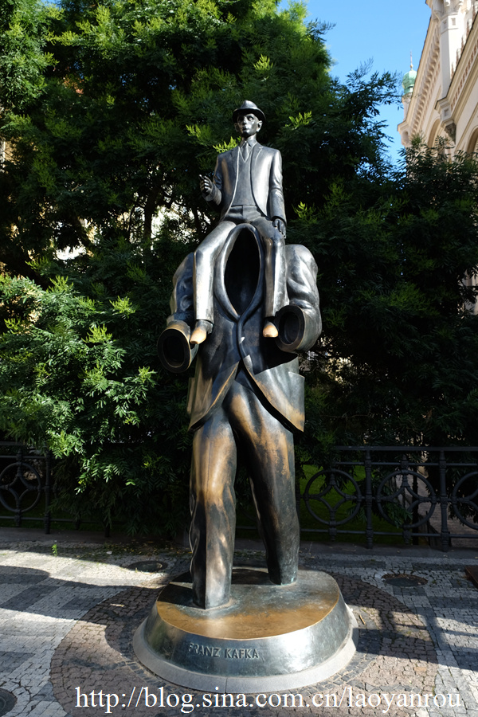
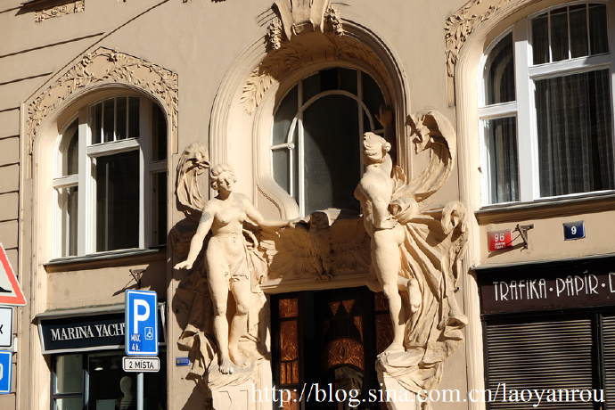
这种压抑在踏入平卡斯教堂以后尤为深刻，刚一进门就看见两边墙壁上密密麻麻的写满了如蚯蚓般的文字和花纹，即使非密集恐惧症的人估计看着会非常难受，因为这些文字竟然是1942-1944年在Terezin集中营被纳粹屠杀的8万多犹太人的名字，犹太人正是以这种极端冲击视觉方式肆意宣泄其对纳粹的刻骨仇恨以及对逝者的无尽缅怀。而更为震撼人心的是二楼陈列的关押于Terezin集中营一万多名儿童的绘画作品，大多描绘的是集中营阴森压抑的禁闭生活，但也有不少稚嫩的作品喊出了他们对自由空气和美好未来的向往，可令人扼腕叹息的是这些作品的作者可能大多数都永远地困在黑暗的牢笼里了，因为他们之中仅有200多名儿童在纳粹的屠杀中幸存了下来。我们默默地一幅幅地看着那些稚嫩的笔画、简单的颜色勾勒和浸透其中喷薄欲出的自由梦想，头脑中充斥着对这些对这些孩子们当时所处环境和绘画场景的想象，耳边仿佛听见他们在纳粹监控下轻声细语分享心中仅存的幻想，一路无语。
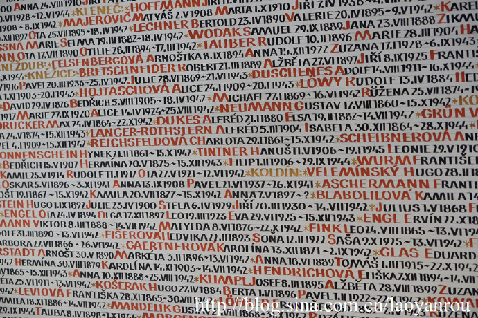
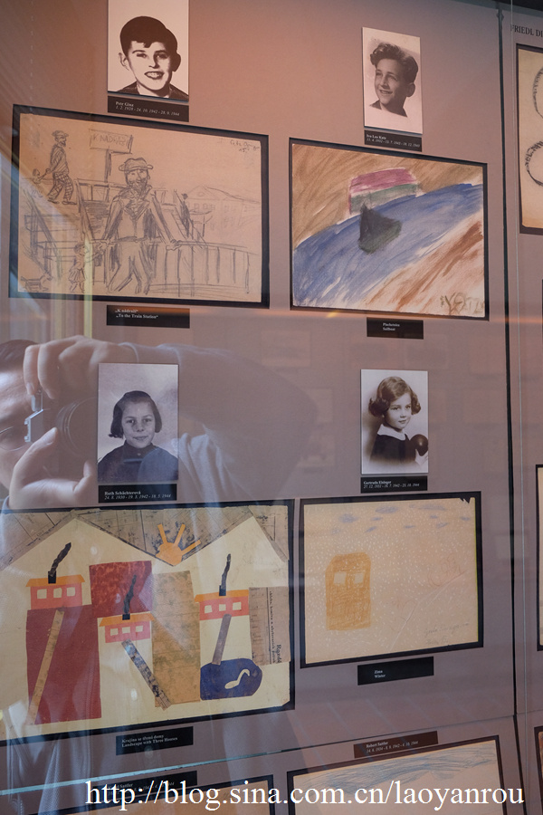
走出平卡斯教堂，抬头看见布拉格明晃晃的阳光，仿佛重回人间般长长地舒了一口气。可没等缓过来多久，走入了旧犹太墓地后又要马上面对着犹太人另一种形式的死亡，一眼望去，整个墓地全部被密密麻麻、高矮大小参差不齐的墓碑给挤得满满当当，游人们只能顺着墓地边上的小径环绕一圈才能将其参观完。从墓碑的形制上看大致能判断出逝者的身份和财富，除了小部分墓碑雕工精美规格颇大以外，大多数墓碑都是简单刻字的石碑，只是能隐约能看出一些墓主人家族的标记而已，更有甚者仅是些看不出碑文、残缺不全的石块而已。可无论生前富贵贫贱，最终还是因为身上贴了犹太人的印记而只能被葬在了一起，所谓殊途同归吧。所以即使从墓地地面上看有一万多块墓碑已经密不透风了，但更拥挤的是地下，层层叠叠地安葬了超过十万犹太人。可见当时的种族隔离政策是多么严苛，犹太人不仅生前被限制在一块区域不能随人口扩张而加大地盘只能往高处要生存空间，连死后都要一层层挤在一起不得舒坦。
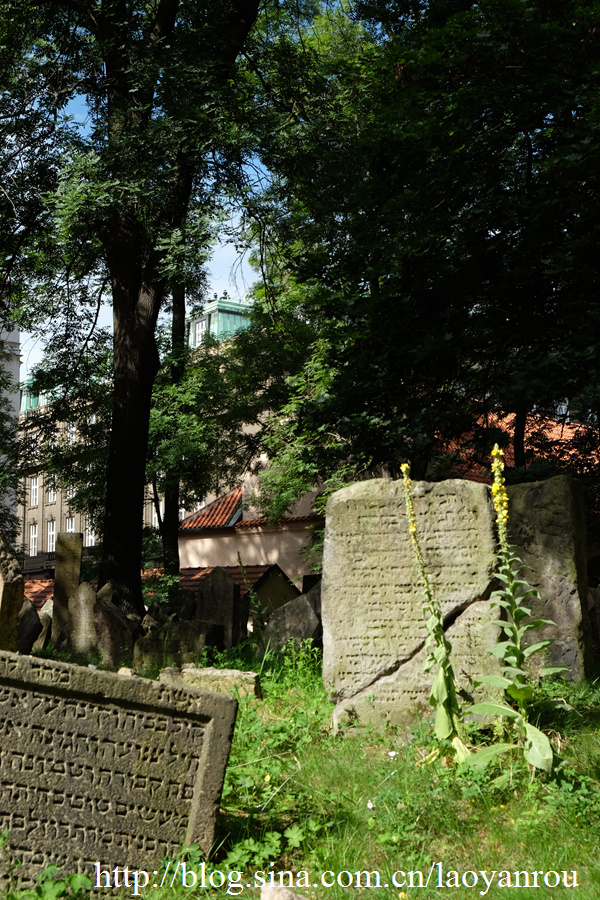
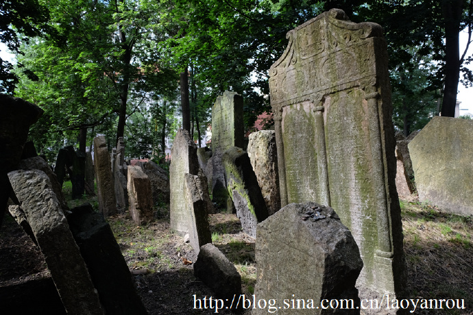
饱受苦难折磨的犹太人其实也有灿烂辉煌的另一面，这是我们在参观完梅瑟教堂的犹太文物后得到的感触。源于其种族基因中敏锐的商业嗅觉和灵活的经济头脑，加上高度重视教育，使得不少犹太人成为各行各业尤其是商业方面的翘楚和精英，其中既有拉斐尔、毕加索、卡夫卡、卓别林等著名文学艺术家，也有佛洛依德、马克思、爱因斯坦等哲学及科学大拿等等不胜枚举。他们通过聪明才智及勤奋工作积聚了大量社会财富，以不到全世界0.2%的1500万人口做出了令全世界其他民族相形见绌的精神和财富贡献，但同时也树大招风招致了其他宗教的嫉恨和排挤。犹太人所创造的财富文明辉煌仅从梅瑟教堂中展示的各式各样流光溢彩精美绝伦的犹太形制的圣器、衣帽、家居器皿等普通家居文物就可足见一斑。其实在犹太区里类似梅瑟教堂展示犹太人文物的地方还有不少，如旧-新犹太教堂、犹太博物馆等等，只不过时间有限，来不及一一参观，只好带着些许遗憾，告别了灰黑低矮但又精光内敛的布拉格旧城犹太区。
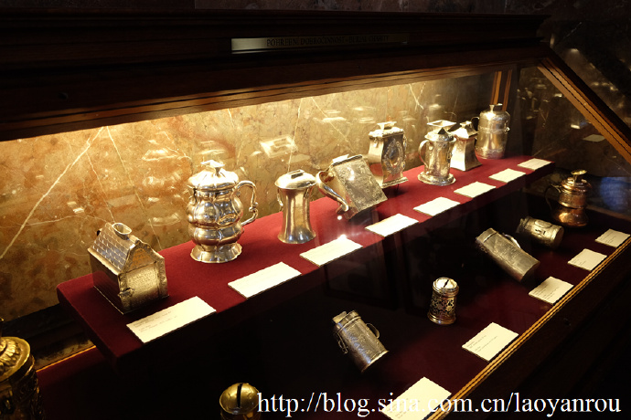
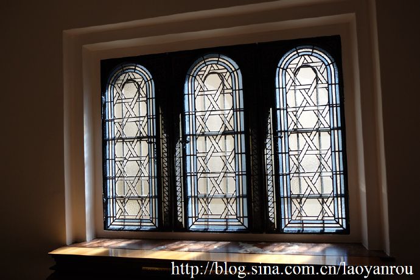
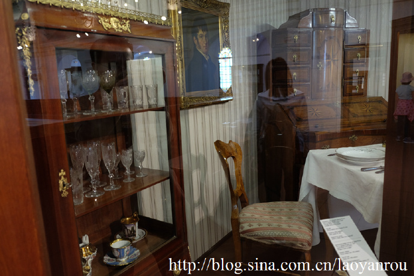
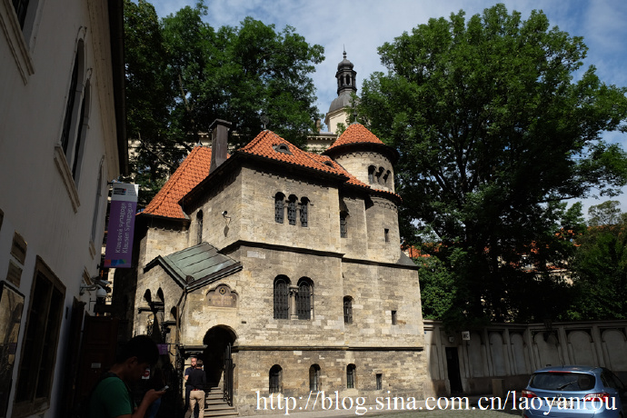
朝着高堡区走的路上，阳光明媚，鸟语花香，路上车流穿梭不息，在犹太区参观时残留的一丝心理阴霾顿时一扫而光。高堡其实是布拉格发祥之地，传说是公元十世纪时由美丽公主和英俊农夫结婚后一起兴建，后因神圣罗马帝国定都布拉格城堡后而逐渐衰落。城堡坐落于一座山丘上，我们费了好些劲才吭哧吭哧地爬了上去，但值得一看的东西所剩无几了，一个是名人墓地，不仅布拉格600多位历史名人均安葬于此（包括存在主义先驱卡夫卡一家），而且很多墓碑无论是设计创意还是周边雕塑工艺均可谓巧夺天工，在碑前的鲜花映衬下称为艺术品长廊也不为过，因此我们非但感觉不到一丝墓地的阴森，反倒是觉得神清气爽，或许这正是布拉格人缅怀逝者的一种特殊致敬方式吧！除了墓地还有一座圣保罗教堂历史悠久，新哥特式的教堂建筑鹤立鸡群般稍显孤寂，但粉红色的教堂侧门又给教堂平添了几分温暖和情趣。教堂外的草坪上竖立着几尊石雕，想必也是一些名家之作，三五个音乐发烧友在用小提琴和大提琴悠哉地演奏着古典小曲，悠扬的乐声在高堡中徘徊萦绕，令不少游人放慢了脚步，静静地沉浸在优美环境和天籁之音的水乳交融之中。乐声中我们缓步登上了高堡的城墙，不曾想这厢风景独好，放眼望去静静流淌的伏尔塔瓦尔河与横跨两岸的一座座铁桥石桥混泥土桥一起，将两岸的郁郁葱葱、红瓦黄墙、灰瓦尖顶串在一起，好一幅中欧古城的绮丽画卷！我们三人在城墙头找了一处长椅坐下，葡萄藤蔓环绕四周，山顶清冽的凉风夹着伏尔塔瓦尔河的清新气息习习而来，绵绵不绝催人眠，极目远眺古城全景，美不胜收，全身都酥软得久久不愿站起来了。
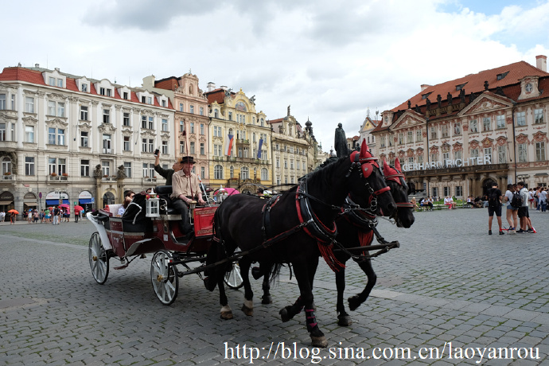
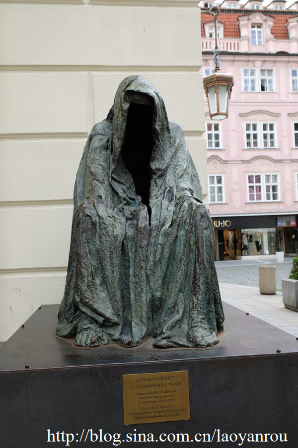
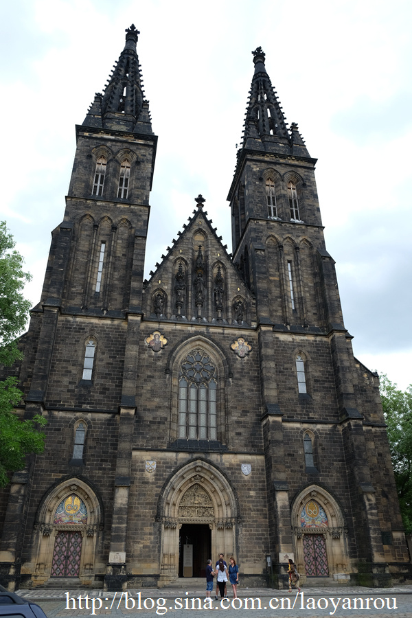
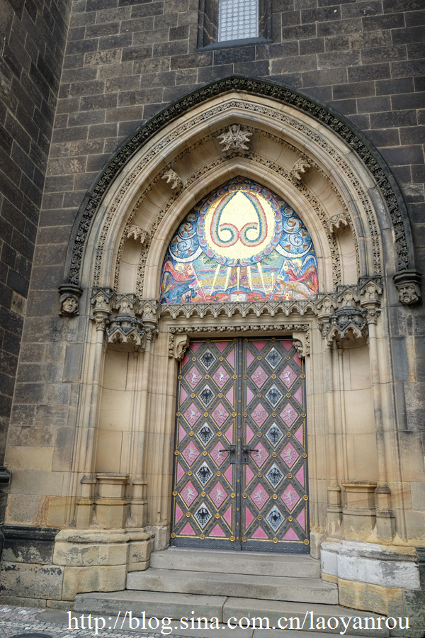
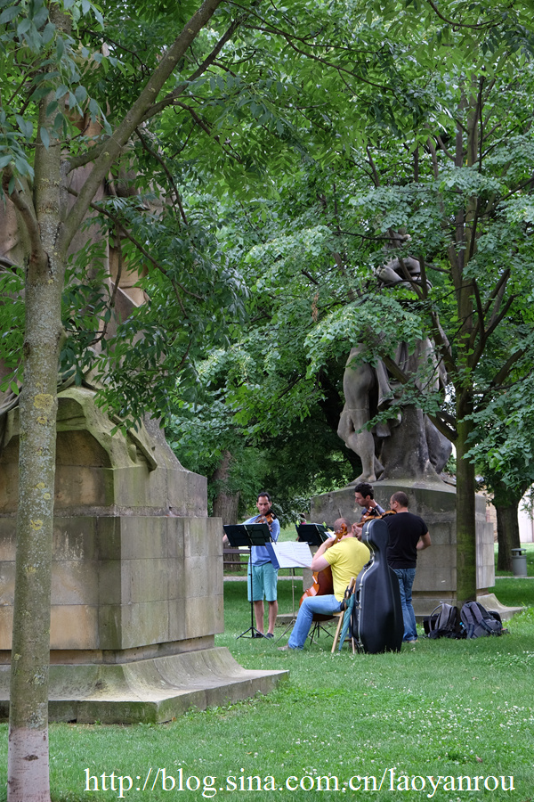
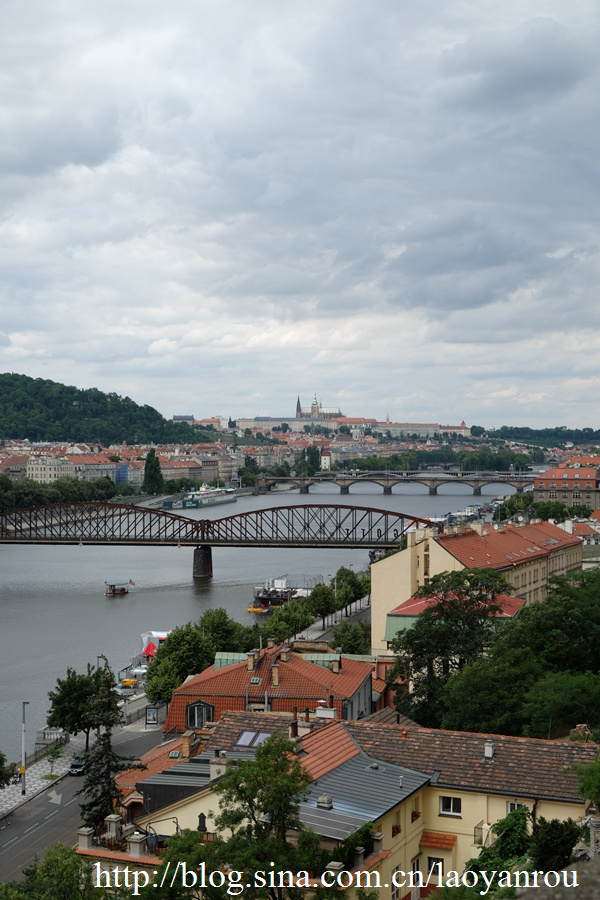
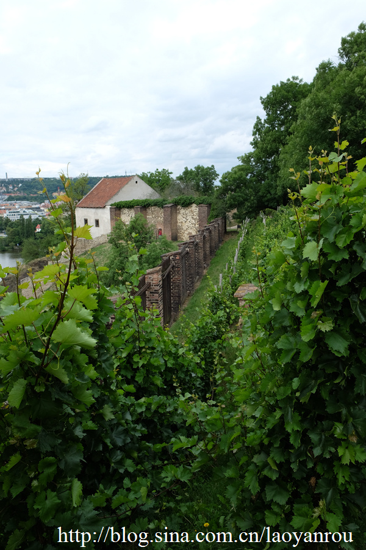
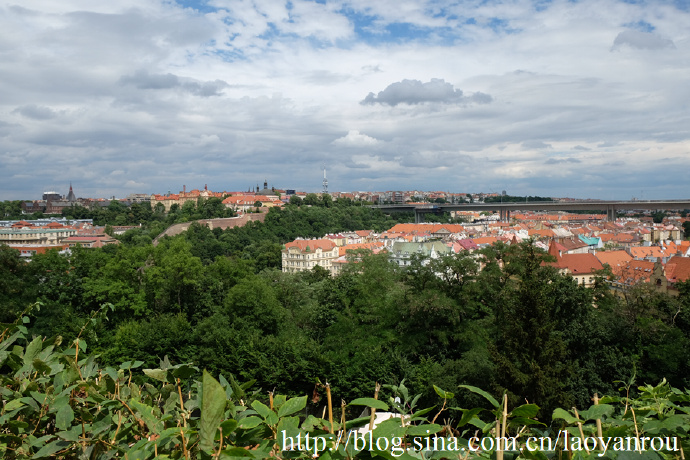
恋恋不舍地离开高堡，布拉格之旅也圆满地画上了句号。下午我们将告别布拉格前往捷克CK小镇。布拉格往CK小镇的交通一般靠火车或大巴，我们原先考虑火车还要转车挺周章的，加上之前从慕尼黑坐大巴至布拉格的体验还算不错，所以便坚持按原计划搭乘SA大巴前往CK小镇，三人票价18欧（大人9欧小孩免费），事实证明该选择还是明智的，不仅价格便宜而且车上设施齐全舒适，三四个小时的车程在欣赏窗外捷克雨后彩虹和绿野仙踪般田野风光中很快度过了。临近晚上8、9点时分天色渐暗，大巴缓缓驶达CK小镇外围我们预订民宿附近，将我们一行三人放下便继续开往镇中心。而此时周边的所有超市便利店均已打烊，一片寂静的民宿则是几幢新加坡华裔夫妇雇人打点的联排别墅，也无前台值班，所以我们晚上连别墅大门都没出，简单用自带电饭煲煮了个面就算对付了晚餐，听着窗外的雨点淅淅沥沥地恬然入梦。 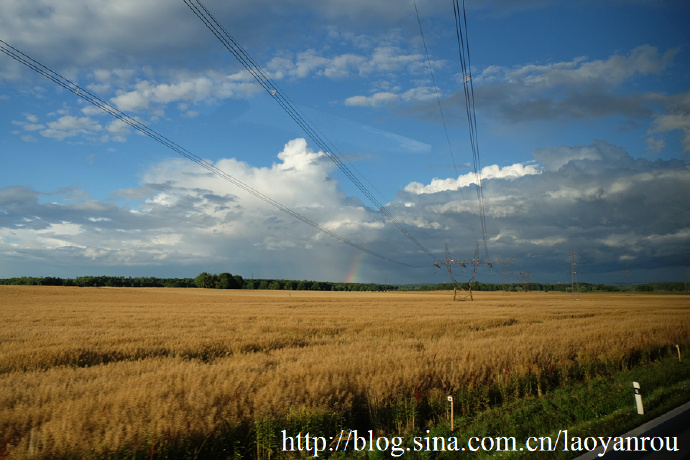 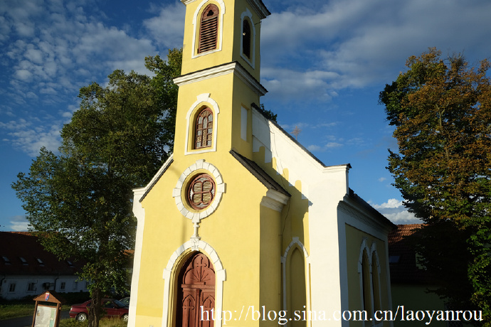 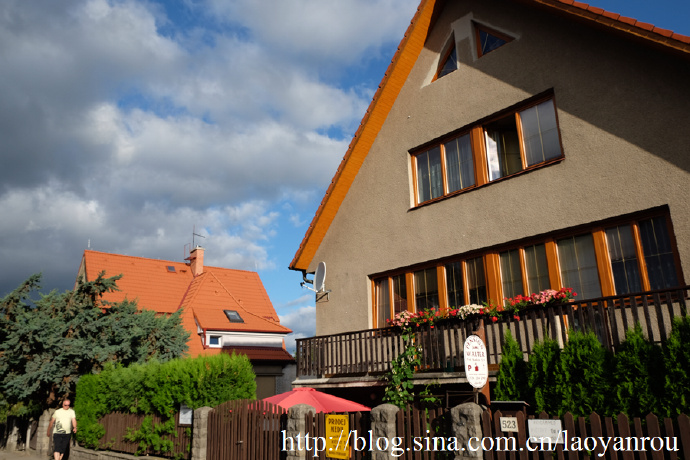